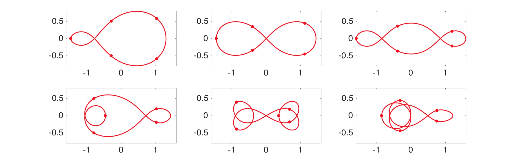
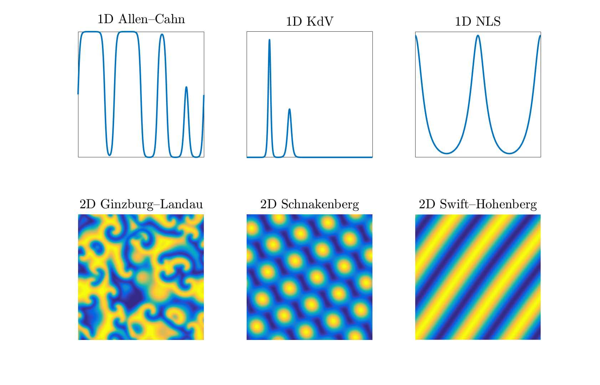
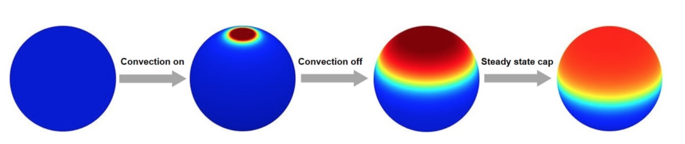
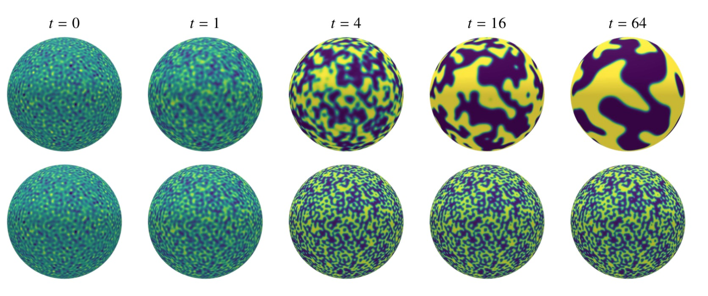

Background
Orthogonal polynomials lie at the heart of scientific computing. In the last ten years, there has been a renewed interest in their properties, which has contributed to the development of more efficient algorithms. In particular, asymptotic expansions and the exploitation of sparsity and low-rank structure in recurrence relations have been some of the key ingredients in the design of packages such as chebfun (MATLAB), approxfun (Julia), and dedalus (Python), which have automated the computation with orthogonal polynomials for approximating functions via interpolation, computing integrals via quadrature, and solving differential equations via spectral methods.
These packages are particularly relevant to the astrophysics, computational fluid dynamics, and biology communities, where simple geometries such as the sphere are prevalent. For example, nonlinear advection equations on the sphere, such as the shallow water equations, are of significant importance in atmospheric numerical modeling, while reaction-diffusion equations in a spherical shell are widely used as a model for convection patterns within the Earth's mantle, as well as for the modeling of morphogenesis in embryos. On top of these standard local differential equations, their nonlocal integral analogs are becoming more and more popular to model a wide range of phenomena in these communities.
Results (Ph.D.)
During my Ph.D. (2013–2017), I developed new numerical methods for simulating periodic physical phenomena.
The first year of my Ph.D. work was about the computation with periodic functions via approximations by trigonometric polynomials to machine precision, including the solution of nonlinear ODEs and ODE eigenvalue problems. For example, the Sturm–Liouville problem with periodic boundary conditions,
$$
-\frac{d}{d\theta}\Big[p(\theta)\frac{du}{d\theta}\Big]+q(\theta)u(\theta)=\lambda w(\theta)u(\theta),
$$
is discretized by \((-\mathbf{D}_N\mathbf{M}[p]\mathbf{D}_N + \mathbf{M}[q])\widehat{u} = \lambda\mathbf{M}[w]\widehat{u}\), where \(\mathbf{D}_N\) and \(\mathbf{M}[f]\) are the differentiation and multiplication by \(f\) matrices in Fourier space, and \(\widehat{u}\) is the vector of Fourier coefficients of \(u\).
During my second year, I investigated the computation of choreographies, periodic solutions in time of the \(n\)-body problem in which the bodies share a common orbit. The \(n\)-body problem describes the motion of \(n\) point particles \(z_j(t)\in\mathbb{C}\), \(0\leq j\leq n-1\), through
$$
z_j^{''}(t) - \sum_{\underset{i\neq j}{i=0}}^{n-1} \frac{z_i(t) - z_j(t)}{\big\vert z_i(t) - z_j(t) \big\vert^3} = 0, \;\, 0\leq j\leq n-1.
$$
Since choreographies share a single orbit and are uniformly spread along it, these can be written as \(z_j(t) = q(t + 2\pi j/n)\), for some \(2\pi\)-periodic function \(q:[0,2\pi]\rightarrow\mathbb{C}\), and are minima of the action
$$
\begin{align}
A = \frac{n}{2}\int_0^{2\pi} \big\vert q'(t) \big\vert^2 dt + \frac{n}{2}\sum_{j=1}^{n-1} \int_0^{2\pi} \Big\vert q(t) - q\Big(t + \frac{2\pi j}{n}\Big) \Big\vert^{-1}dt.
\end{align}
$$
My coauthor and I proposed an algorithm based on interpolation and optimization for computing choreographies, which we implemented in the choreolab MATLAB package.

In my third year, I worked on stiff PDEs of the form
$$
u_t = \mathcal{L}u + \mathcal{N}(u), \quad u(0,\boldsymbol{x})=u_0(\boldsymbol{x}),
$$
where \(u(t,\boldsymbol{x})\) is a function of time \(t\) and space \(\boldsymbol{x}\), \(\mathcal{L}\) is a linear differential operator on a spatial domain in one, two or three periodic space dimensions and \(\mathcal{N}\) is a nonlinear operator of lower order. My colleague and I compared 30 high-order exponential integrators and showed that is it hard to beat one of the simplest integrators. Implementations in the chebfun MATLAB package allow one to compute the solutions of many PDEs quickly and accurately (spin code). We also implemented some of these integrators in the chebpy Python package.

The main project of my final year at Oxford was on stiff PDEs on the unit sphere of the form
$$
u_t = \mathcal{L}u + \mathcal{N}(u), \;\; u(t=0,x,y,z)=u_0(x,y,z).
$$
My coauthor and I proposed a novel fast algorithm based on a variant of the double Fourier sphere method and implicit-explicit time-stepping schemes (spinsphere code).

Results (Post-Ph.D.)
Building on these discretizations, I investigated biological applications during my postdoc at Columbia (2017–2019). We used the fast algorithms we developed to investigate pattern formation and explain symmetry breaking on the sphere with colleagues at Princeton.

My collaborators and I also introduced nonlocal diffusion operators on the sphere \(\mathbb{S}^2\),
$$
\mathcal{L}_\delta u(\boldsymbol{x}) = \int_{\mathbb{S}^2} \rho_\delta(\vert\boldsymbol{x}-\boldsymbol{y}\vert)
[u(\boldsymbol{y}) - u(\boldsymbol{x})]\,d\Omega(\boldsymbol{y}),
$$
where\(\rho_\delta\) is a suitably defined (singular) nonlocal kernel. We presented algorithms for solving PDEs involving such operators with spectral accuracy in space and high-order accuracy in time. These are based on the diagonalization of the nonlocal operators, the high-accuracy computation of their eigenvalues, a fast spherical harmonic transform, and exponential integrators.

Several years later, in 2025, we introduced a nonlocal vector calculus on the unit two-sphere based on weakly singular integral operators. Within this framework, the operators were diagonalizable in scalar and vector spherical harmonics, which enabled the proof of the first nonlocal Stokes theorem on a curved surface. We also demonstrated that these nonlocal operators converged strongly to the classical differential operators of vector calculus as the interaction range tended to zero.